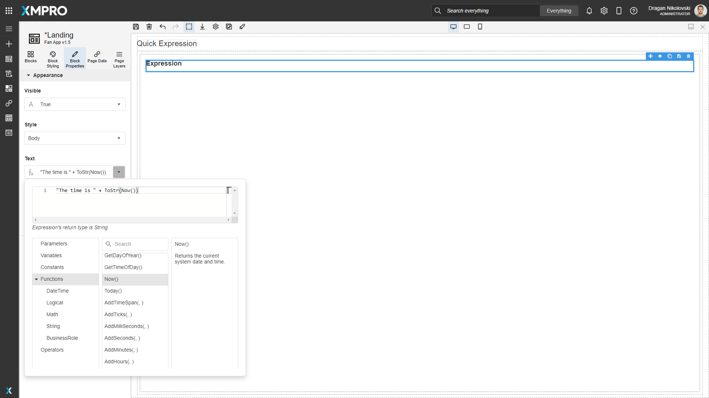

Variables and Expressions
Variables
Variables are a way to store a value for later use, or, when in Expression mode, to calculate a value from other Variables, Parameters, user input, data from Data Sources, and various Functions, Constants, and Operators.
Variables are managed through the Page Data tab in the page editor. They have two modes - Value and Expression. In Value mode, the Variable takes the latest changed value of the Block's value. In Expression mode, the Blocks' values are overridden by the calculated value of the Variable.
Expressions
An Expression is an extra column on a Data Source that calculates its value according to the designed expression.

Quick Expressions
A Quick Expression is a quick one-off expression you can assign to a Block Property. To access Quick Expressions, cycle through the property's modes with the button on the left until it becomes an Expression.


Expression Editor
The Expression Editor is where an Expression is built. At the top is a text area in which you can type the expression. Below the text area are three sections - the categories, the Expression terms, and the description areas. Clicking on a category will show different items in the Expression terms area, and clicking on an Expression term will show a description of the term in the description area.
Double-clicking an Expression Term will enter that term in the text area at the position of the cursor.
Variables Example
In the following example, the Circular Gauges take their value from Variables. There are three variables - A, B, and C. A and B are in Value mode, and C is in Expression mode with the following expression:
{Variable.A} + {Variable.B}
Further Reading
Last modified: May 24, 2025